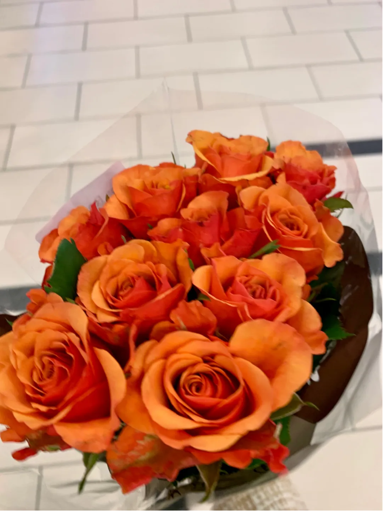
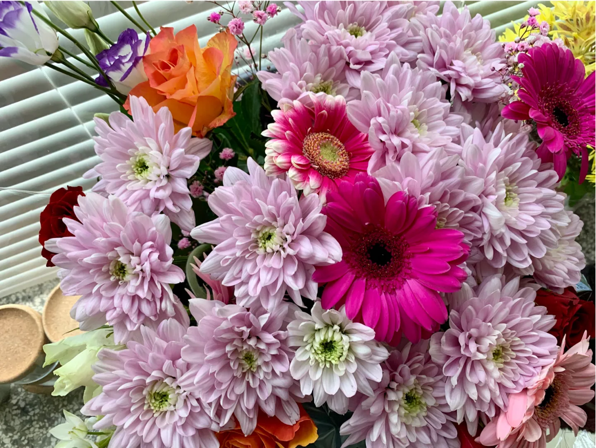
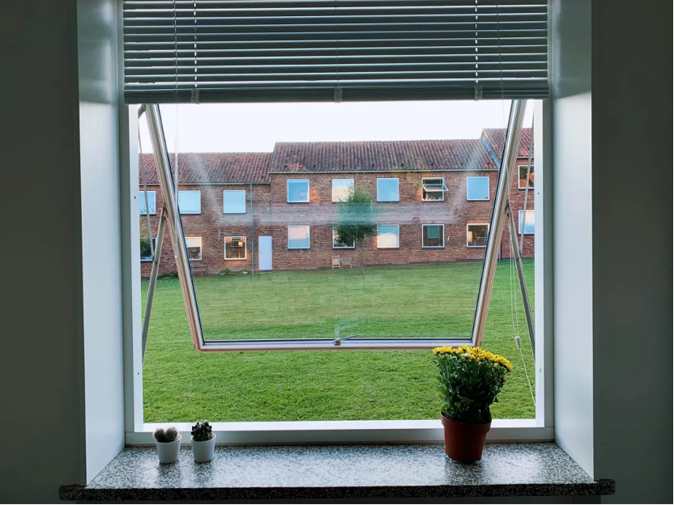
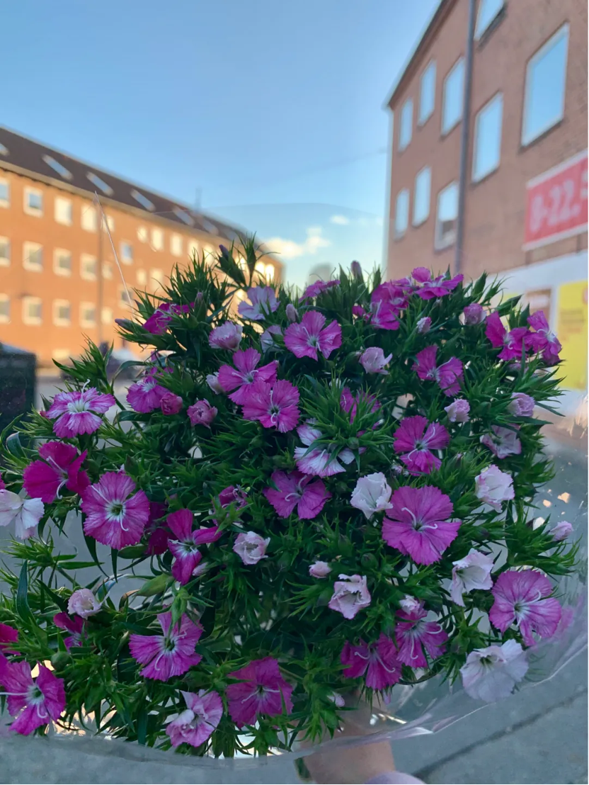

在丹麦似乎没有见过专门的花店。然而随便去一个家附近的超市，就能看到各种各样的花摆在超市外面人流穿过的地方。大家拿着一束花隔着一米的距离排着队付款已经是司空见惯的事情。
There seems to be no dedicated florist in Denmark. However, if you go to a supermarket near your home, you can see all kinds of flowers outside the supermarket where people pass by. It is not uncommon for people to line up to pay with a bunch of flowers separated by one meter.
于是我也开始买花。
I started to buy flowers too.
花很便宜，一束花也就十到三十块不等。买的花多了也会知道，不要买那种开得太艳的花，放在家里的第二天就会开始凋谢。买一束只有花骨朵的花，放在房间的窗台上，每隔两天换一次水，成长显而易见。
Flowers are very cheap, ranging from ten to thirty Danish Krone for a bunch of flowers. If you buy a lot of flowers, you will know, don't buy the kind of flowers that bloom too brightly, they will start to wither the next day you put them at home. Purchasing a bunch of flowers with only flower buds, placing them on the windowsill of the room, changing the water every two days, and the growth will be obvious.
大部分时候我会买其他绿植，买得最多的，要数仙人掌了。我总是随性生活，连自己都疏于照顾，更别说植物了。这么一来，仙人掌便完美地满足了我的需求。但清一色的绿总会显得生活过于单调，所以偶尔的一束花就成为了生活的调味剂。
Most of the time I buy other green plants, especially cacti. I've always lived casually and neglected to take care of myself, let alone plants. With that, the cactus met my needs perfectly. But all-color green always makes life too monotonous, so an occasional bunch of flowers becomes the spice of life.
从前我并不爱花，甚至对其有些厌恶。
I didn't love flowers before, I even hated them a little bit.
其一是我知道花的周期很短，对于我这种生活中很难接受改变和尝鲜的人来说，养花实在是一种折磨。虽然花开很美，但在花凋谢了之后，也要忍受把它扔进垃圾袋的残酷现实。我并不是害怕衰老，或者时间流逝，我害怕的是见过它最美的样子，也要接受它最落败的模样。就好像仙人掌，它的人生中没有一个巅峰时期，或许它会慢慢成长，但是不会在某一天让你感到惊艳，所以也不会带来巨大的失落感。我想，映射到自己身上，我也希望我一生都可以慢慢成长，不要在某一段时间锋芒毕露，然后就全是下坡路了。
One is that I know the cycle of flowers is very short, and for people like me who have a hard time accepting changes and early adopters in my life, growing flowers is really a kind of torture. While the bloom is beautiful, the harsh reality of tossing it in a garbage bag after the flower has faded is also a problem. I'm not afraid of aging, or the passage of time, I'm afraid of seeing it at its best and accepting its worst. Just like a cactus, it does not have a peak period in its life. Maybe it will grow slowly, but it will not surprise you one day, so it will not bring a huge sense of loss. I think, reflecting on myself, I also hope that I can grow slowly throughout my life, not to show off my edge for a certain period of time, and then it will all go downhill.
其二是我以前总觉得买花是一件极具少女情怀的事情。为了标榜自己是一个成熟人士，我觉得自己应该跟小女孩心态划清界限。那个时候总为自己的少女情怀而感到些许羞耻，甚至觉得花，是一种落俗的浪漫。同一时期除了花，还会讨厌粉红色，讨厌流眼泪，因为这所有的一切都会让自己显得少女。而在当时的自己眼里，少女就是“脆弱”的代名词，而脆弱的人会被人看低。于是，我杜绝一切可能让自己看上去少女的情况，把真实的细腻情感隐藏在心里，伪装成开怀大笑的模样。
The second is that I used to think buying flowers was a very girly thing. In order to flaunt myself as a mature person, I feel that I should draw a clear line with the little girl mentality. At that time, I always felt a little ashamed for my girlish feelings, and even thought that flowers were a kind of unconventional romance. At the same time, in addition to flowers, I also hate pink and tears, because all of these will make me look girlish. In my own eyes at the time, girls were synonymous with "vulnerability", and vulnerable people would be looked down upon. So, I put an end to all situations that might make me look girly, hide my true and delicate emotions in my heart, and pretend to be strong.
但是人总是会在特定时刻，摧毁重建自己的信念。
However, people always destroy and rebuild their beliefs at certain moments.
就好像现在我不再去在乎自己的花期长短，因为现在的人生是尽量去体验每一个高峰时刻。弗洛伊德在《文明及其不满》里提到过，“最严格意义上的幸福产生于那些受到高度压抑的需要的满足，而且在本质上，这种幸福只可能是一种暂时的现象。我们天性如此，强烈的享受只能在对比中获得，而无法在某一事物的状态中获得。”如果快乐常伴左右，那反倒显得快乐无意义了。而相反，如果平平无奇的生活中没有任何调味剂，那似乎快乐也会大打折扣。
It's as if now I don't care about the length of my bloom anymore, because my life now is to try to experience every peak moment. Freud stated in Civilization and Its Discontents, "Happiness in the strictest sense arises from the satisfaction of those highly repressed needs and can only be a temporary phenomenon in its nature. It is our nature that strong enjoyment can only be obtained in contrast, but not in the state of a thing." If happiness is always around, it seems that happiness is meaningless. On the contrary, if there is no flavor in ordinary life, it seems that happiness will be greatly reduced.
又好像我不再抗拒少女情怀了，因为我的每一种情绪都有它存在的价值，即使是柔软而脆弱的。当我们的“面子”变得重要起来的时候，当我们以为其他人在时刻评价我们时，虽然人们远没有我们以为地那么注意我们，那时我们不允许自己为人，我们为自己的无能，为拒绝接受本性受约束、生而有之的事实付出高昂代价，包括精力水平、幸福感、快乐感、创造力，最终以成就大小作为代价。而如今，我开始慢慢学会释放自己的情绪，允许自己为人，允许自己有体会脆弱情绪的自由。
It seems that I no longer resist girlish feelings, because every emotion of mine has its value, even if it is soft and fragile. When our "face" becomes important, when we think other people are judging us all the time, although people pay less attention to us than we think, then we do not allow ourselves to be human, we are for our own incompetence, for Refusal to accept the fact that nature is bound and innate comes at a high price, including energy levels, well-being, joy, creativity, and ultimately, the size of achievement. Now, I am slowly learning to release my emotions, allow myself to be human, and allow myself the freedom to experience vulnerable emotions.
所以即使买回来的花，插在窗台的花瓶里只开一个星期，买花的这个行为还会尽显自己或许在这个年纪已经不适宜的少女情怀，我还是坚持买花。毕竟，谁都没有办法否认，花就是很美呀。
So even if the flowers I bought will only bloom for a week in the vase on the windowsill, the act of buying flowers will still show my girlish feelings that may not be suitable for me at this age, so I still insist on buying flowers. After all, no one can deny that flowers are beautiful.
